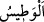

itmînâna kavuştuğu ve peşinden gelecek olan yakın bir zaferin müjdecisi olan rahmetini
“indirdi.” Şu var ki mutlak sekînet, Peygamber (a.s.) için bundan önce de hâsıl idi. İşte
böylece bozguna uğrayan müminler geri döndüler ve zaferi kazandılar.
“Sizin” birbirinizi gördüğünüz gibi kendilerini gözlerinizle “görmediğiniz askerler
indirdi” Bu askerler meleklerdir. Üzerlerinde beyaz elbise olduğu halde siyah-beyaz
atlar üzerinde inmişlerdi. Onları kâfirler görüyor ama müminler görmüyordu.
Peygamber (a.s.), müşriklerle yapılan savaşa bakıp: “İşte fırının kızıştığı an!”
buyurdu.
Hadiste geçen “__WORD__” kelimesi, Arapların altına ateş yakıp üzerinde et kızarttıkları
taş mânâsına gelir. Aslında tandır demektir. Bu kelime, yalnızca Peygamber (s.a.)’den
işitilen (daha önce Arapların kullanmadığı) kelimelerdendir. “Fırın kızıştı” ifadesi,
harbin şiddetlenmesinden kinâyedir.
Daha sonra Peygamber (a.s.) katırından indi. Bazı rivayetlerde katırından inmediği
bilakis: “Ey Abbas! Bana kum ver!” buyurduğu söylenir. Bir başka rivayet ise şöyledir:
Katırı neredeyse karnı yere değecek kadar alçaldı. Sonra yerden bir avuç toprak aldı,
onu müşriklere doğru attı ve “Yüzleri çirkinleşsin!” dedi. Müşriklerden gözleri toprakla
dolmayan kimse kalmadı. Sonra Peygamber (a.s.) şöyle buyurdu: “Kâbe’nin Rabbi
adına, bozguna uğrayın.”[117]
Peygamberimizin bu mucizesi, (Hz. Mûsâ’nın) asâsının yılana dönüşmesi
mucizesinden daha büyüktür. Çünkü yılan haline dönüşen âsânın sihirbazların iplerini
ve sopalarını yutması, (Mûsâ’nın) düşmanını kahretmemiş, onların topluluğunu
dağıtmamıştı. Bilakis ondan sonra düşmanın Mûsâ (a.s.)’a karşı azgınlığı ve tecavüzü
daha da artmıştı. Fakat Peygamberimiz’in attığı bu kumlar düşmanı helak etmiş,
topluluklarını dağıtmıştır.
Peygamber (a.s.)’in o gün yaptığı duâlardan birisi de şudur: “Allah’ım, hamd yalnız
Sana mahsustur, şikayet yalnız Sana yapılır, yalnız Senden yardım dilenir!”.
Peygamberimiz’in bu duâsı üzerine Cibrîl (a.s.): “Denizi yardığı gün Mûsâ’ya Allah’ın
telkin ettiği sözler sana da telkin edildi.” buyurdu.[118]
Huneyn savaşında inen meleklerin sayısı hakkında âlimler farklı görüşler
belirtmişlerdir: Onların sayısının beş bin, sekiz bin ya da on altı bin olduğu
söylenmiştir. Bu meleklerin müminlerle birlikte savaşıp savaşmadıkları konusunda da
görüş ayrılığı vardır. Savaştıklarını söyleyen âlimler olduğu gibi Bedir savaşı dışında
bizzat savaşmadıklarını söyleyenler de vardır. Onlara göre meleklerin inmesi,
müminlerin kalplerine güzel düşünceler atmak ve böylelikle onları desteklemek,
müşriklerin ise kalplerine korku salmak içindir.
“ve” öldürülmek, esir alınmak sûretiyle “kâfirlere azap etti. İşte kâfirlerin cezası
budur.” yani biraz önce zikredilen bu belalardan onlara yapılanlar, onların dünyadaki
cezâlarıdır.
Allah, müşrikleri Huneyn vâdisinde hezimete uğratınca geri dönüp kaçtılar, âilelerinin